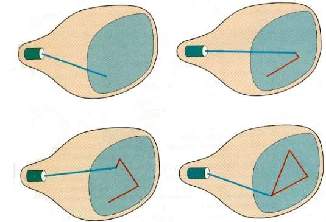
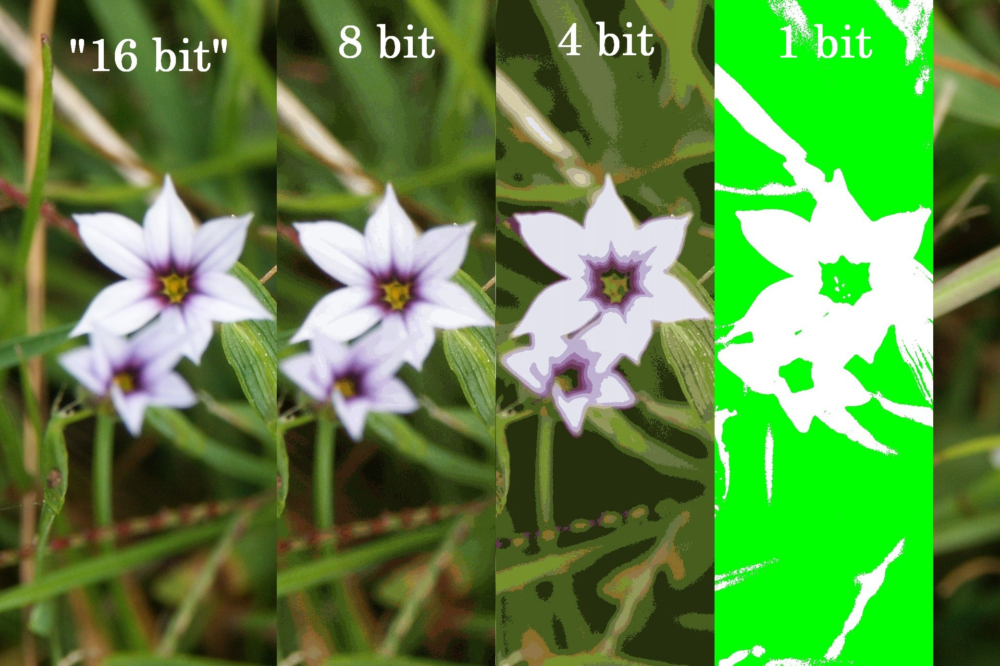
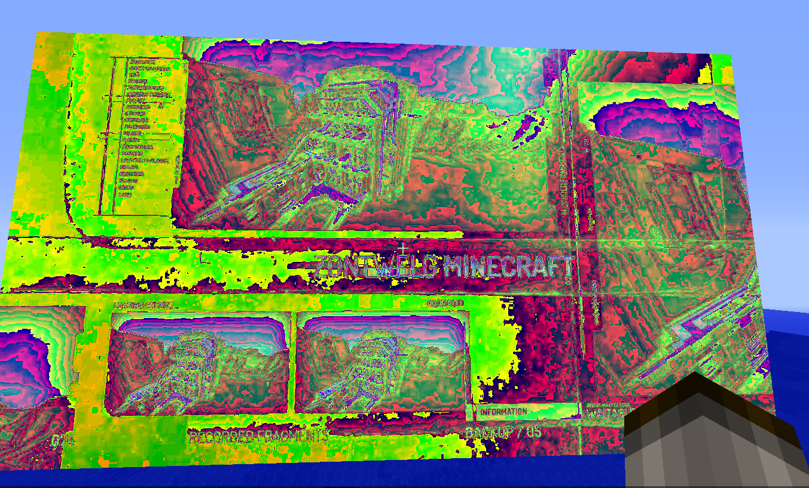
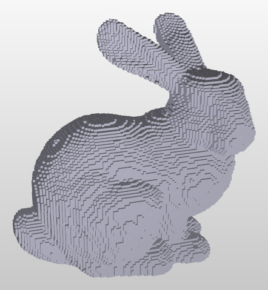
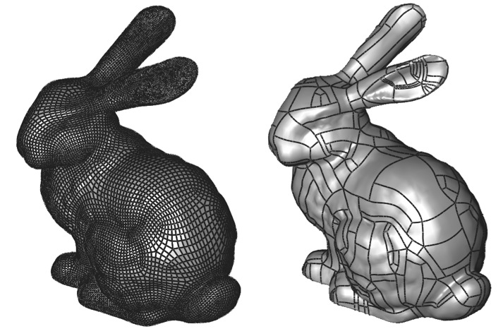

### A note on this talk's theme



Demo of a framebuffer.


A brief remark on hubris.
### Can we do better? ###
Yes! But not today.
The solution is to store vertices separately from triangle definitions.
Then triangles can resuse shared vertices.
Demo of a loaded mesh.